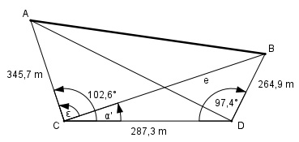
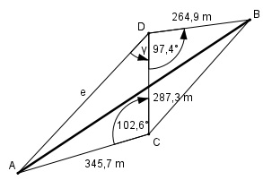

Aufgabe 185 2 Punkte A und B sind durch ein Hindernis getrennt. Zur Bestimmung ihrer Entfernung hat der Vermesser 2 Punkte C und D gewählt, die 287,3 m auseinander liegen. Weiterhin ist A von C 345,7 m und B von D 264,9 m entfernt. Die Peilwinkel sind ACD = 102,6° und BDC = 97,4°. Wie groß ist AB, wenn C und D auf derselben Seite von AB liegen? Wie groß ist AB, wenn C und D auf verschiedenen Seiten von AB liegen?

1. Fall: C und D auf derselben Seite von AB. Im Dreieck CDB: Fall SWS: Cosinussatz: e2 = 287,32 + 264,92 - 2*287,3*264,9*cos 97,4° e2 = 287,32 + 264,92 - 2*287,3*264,9*(-0,1288) e2 = 172 318,1 |√ e = 415,1 m Fall SSW: Sinussatz: e 264,9 m ----------- = ---------- |*sin α’ sin 97,4° sin α’ e * sin α’ -------------- = 264,9 m |*sin 97,4° sin 97,4° e * sin α’ = 264,9 m * sin 97,4° |:e 264,9 m * sin 97,4° sin α’ = --------------------- = e 264,9 m * 0,9917 = ------------------- = 0,6329 415,1 m α’ = 39,3° ε = 102,6° - 39,3° = 63,3° Im Dreieck ACB: Fall SWS: Cosinussatz: AB2 = 345,72 + 415,12 - 2*345,7*415,1*cos 63,3° AB2 = 345,72 + 415,12 - 2*345,7*415,1*0,4493 AB2 = 162 867,3 |√ AB = 403,6 m 2. Fall: C und D liegen auf verschiedenen Seiten von AB:
Im Dreieck ADC: Fall SWS: Cosinussatz: e2 = 287,32 + 345,72 - 2*287,3*345,7*cos 102,6° e2 = 287,32 + 345,72 - 2*287,3*345,7*(-0,2181) e2 = 245 373 |√ e = 495,4 m Fall SSW: Sinussatz: e 345,7 m ------------ = --------- |*sin γ sin 102,6° sin γ e * sin γ ------------- = 345,7 m |*sin 102,6° sin 102,6° e * sin γ = 345,7 m * sin 102,6° |:e 345,7 m * sin 102,6° sin γ = ---------------------- = e 345,7 m * 0,9759 = ------------------- = 495,4 m = 0,681 --> γ = 42,9° Im Dreieck ABD: Fall SWS: Cosinussatz: AB2 = 264,92 + 495,42 - - 2 * 264,9 * 495,4 * cos (97,4° + 42,9°) AB2 = 264,92 + 495,42 - 2*264,9*495,4*cos 140,3° AB2 = 264,92 + 495,42 - - 2 * 264,9 * 495,4 * cos (-0,7694) AB2 = 517 532,1 |√ AB = 719,4 m